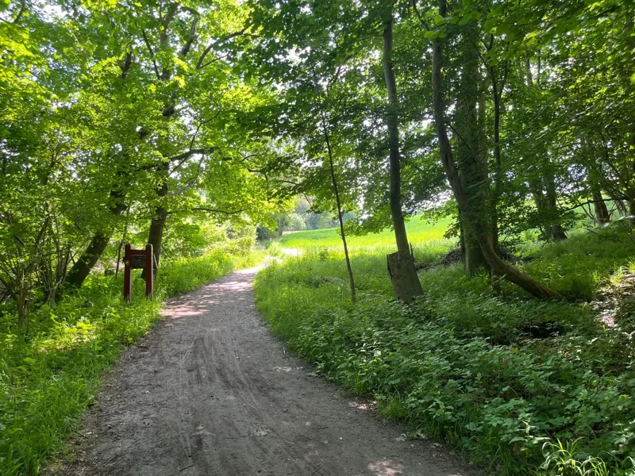
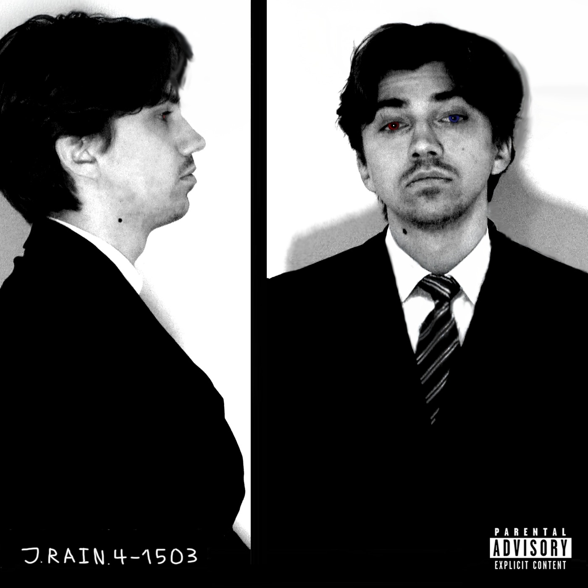
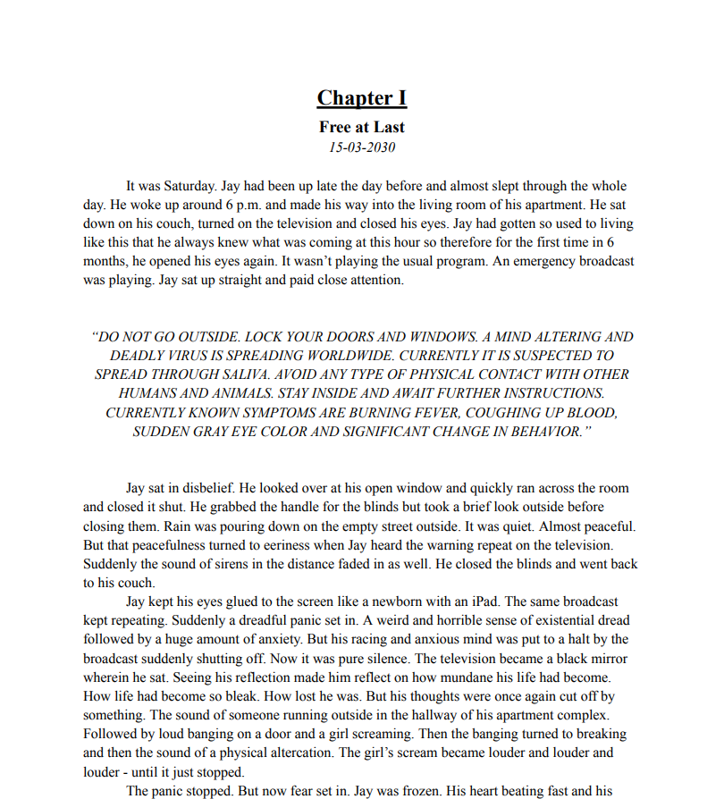
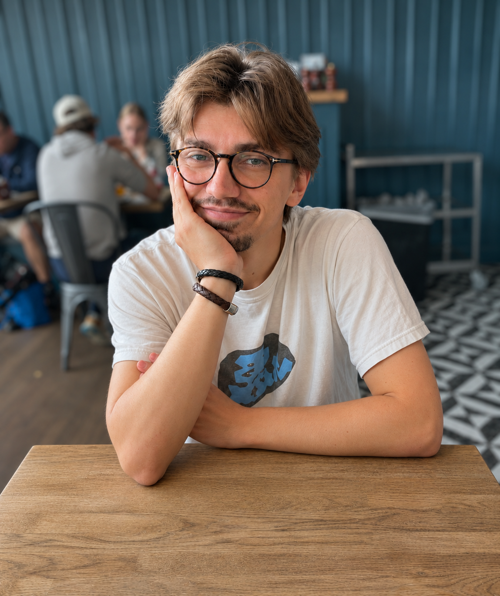

Video & Film Projects
All the videos & films I've made or been involved in.
Welcome to my page containing my showreel, an about me and a page with all the projects I've worked on throughout my life that I deem worth showing. From films to music to video games to literary works. Thank you for visiting.
Showreel

Projects
All the videos & films I've made or been involved in.

A selection of my nature, travel and everyday photography.

All the video games I've made or been involved in.

All the music productions I've made or been involved in.

All the songs I've made or been involved in.

All the literary works I've written or been involved in.

A selection of my websites and design projects.

A little about me
Hi, my name is Johan Oejvind Skaarup and I'm 25 years old. The best way I can describe myself is that besides oxygen, I depend on creativity to live. It's a constant need for me - to create something.
Currently, I'm studying Multimediadesign at Zealand. Before that I studied Humanism/Journalism at Roskilde University and went to the film school KBH Film- & Fotoskole. Besides that and jobs to pay bills, I've also been a filmmaker, writer, social media manager, lyricist, YouTuber, editor, freelancer and a lot more.
What I'm currently working on includes a 2D survival horror video game, writing a music album, writing a book and music production for all three projects.
Interested in working together?